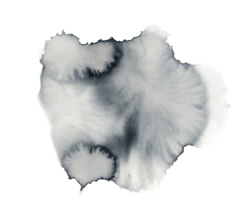
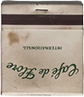
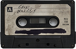

DVD Movement
function draw() {
stroke(palette[strokeIndex]);
fill(palette[fillIndex]);
let bounced = false;
if (posX >= width - size || posX <= 0) {
vitX = vitX * -1;
bounced = true;
}
if (posY >= height - size || posY <= 0) {
vitY = vitY * -1;
bounced = true;
}
if (bounced) {
fillIndex =
(fillIndex + 1) % palette.length;
strokeIndex =
(strokeIndex + 1) % palette.length;
}
circle(posX, posY, size);
square(posX, posY, size);
posX += vitX;
posY += vitY;
}

Un cercle et un carré se déplacent en diagonale, rebondissant sur les bords — comme le logo DVD. À chaque rebond, les couleurs changent en cyclant dans la palette. Le fond n'est pas effacé, laissant une traînée de formes qui dessine un motif géométrique au fil du temps.